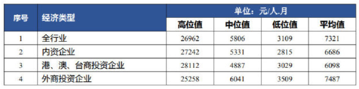
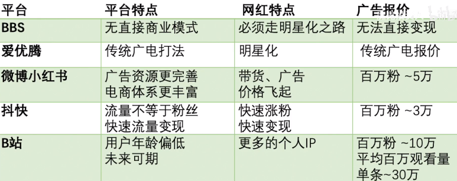

Knowledge Summary
希望自己每天上网都能有所收获。
[TOC]
政治
国情
-
我国只有3%的人拥有本科学历
-
我国的有线电视用户在 2020 年第一季度已经下降到了 2.06 亿户
-
航天行业的人才流失已经很严重了，中国孕育航天人才的土壤已经很贫瘠了，高端人才，在校招的时候，就已经流失了
-
2020-06 最新的超算排行，日本的基于 ARM 架构的 Fugaku 排第一，第二和第三位是美国的计算机，第四和第五才是中国的
-
中国为什么要搞上山下乡？
- 马克思主义发展阶段论：封建主义 —> 资本主义（过渡）—> 共产主义（苏联也支持先发展资本主义）
- 一个国家和地区的发展经验，不能完全照搬到另一个国家：中国特色社会主义
- 新中国成立：所有剥削者的资产，全部剥夺，归国有，这触动了外国列强的利益
- 中国是个海绵型社会，城乡二元结构，农村最大的海绵作用：劳动力蓄水池，每当城市发生危机，大量劳动力失业的时候，西方就转变为街头政治、暴动和社会动乱，在中国转变为下乡
- 60 年代的上山下乡的原因：1960 苏联撤资，城里的大量劳动力失业，必须下乡，而且是下乡到集体户（个人不好接纳）
- 集体化的原因：个体化的农户是不能充当蓄水池的，是送给张三家，还是李四家？
-
中国经济开启内循环，扎根基层，外循环的路开始走不通了
-
深圳人均收入
中位数不到 6K
 -
中国 GDP：11.2 万亿 美元，是印度的 4 倍，江浙沪的 GDP 比印度还高
-
北京市政府在 2019 年迁往了通州，也就是杨利银的老家，将北京市政府从首都赶出去，是为了划清北京市政府和中央政府的职权界限，降格北京市
-
李总理说，中国有 6 亿人，平均月收入 1000 元。我觉得这是中国的最大国情
-
种一亩麦子，农民的纯收入也就三四百元，靠种地，农民必然赤贫
-
公务员级别：
办事员，科员，副科级，正科级（局长），副处级，正处级（县委书记），厅级（江苏省教育厅），省级，国家级
经济
-
政府收入来源（2019 年）
- 税收（16 万亿）
- 卖地（7 万亿，约占 30%）
- 国企收入（只占 1%）
- 烟草行业 417 亿
- 投资服务企业 244 亿
- 电力企业 200 亿
- 石油石化 188 亿
- 电信行业 174 亿
-
2019年上海金融业占GDP比重高达17%，跨境人民币收支规模占全国50%，上海当之无愧我国的金融中心
国企
-
国企做的，很多都是亏本的买卖，航空航天，农化，军工，石油。资本是逐利的，想要发展芯片，还得看国家支持，国企支持
-
军工领域
- 军工是高科技、高利润行业
- 日本从美国军购 F35 150 架，加上 110 台发动机，总价 230 亿美元，和中兴市值差不多
- 中国的军火销售巨头：中国兵器工业集团（北方工业公司）99A 坦克，还做油田开采，矿产开发
- 第二位军火巨头：中国兵器装备集团（南方工业公司）子公司：长安汽车、江铃汽车，中国最大的输变电设备制造商：天威保变电气
- 航空领域：中航工业公司，2018 年营收 655 亿美元，子公司：成飞、沈飞（除欧美国家外，唯一能研究出喷气式舰载机和四代机的制造商），也是中国商飞的三大股东之一
- 海洋领域：中船重工、中国船舶：江南造船厂： 055 国产驱逐舰（2020-01 服役），同时在建国产航母，大连造船厂：辽宁舰、山东舰，2019 年 11 月，南北船合并为中国船舶集团
- 航天领域：航天科工、航天科技：航天和导弹
-
中国农业现状 农化领域
- 农业化学产品和种子行业在 2015 年之前，由 6 大公司主导：美国孟山都、瑞士先正达（全球第一大农药，第三大种子巨头）、德国拜尔（拜尔后来 660 亿美元收购孟山都）、美国杜邦、美国陶氏化学（前两者后来合并）、德国巴斯夫，第七是以色列安道麦
- 中国化工集团，收购以色列安道麦和瑞士先正达（430 亿美元）
- 四巨头变成六巨头：中国化工集团、德国拜尔、美国陶氏杜邦、德国巴斯夫
- 中国化工集团在 2015 年以 70 亿欧元收购意大利倍耐力轮胎（高端轮胎）
- 2019年，中国制造业产值几乎等于美日德之和，中国制造业规模，如果再增加一倍，将会达到整个发达国家之和
- 国企虽然利润低，运营效率底，垄断，但是国企承担着更多的国家和社会责任，如果没有国企，那么军工、农化和种子领域，都不会有和欧美巨头比肩的中国公司存在
-
国企和华为，石油化工领域
- 华为的研发支出在中国企业中排第一
- 中国公司的科技研发活动，绝大部分都是由国企完成的；中国的制造，相当大的一部分，由国企来完成，很多不赚钱、保民生的脏活累活都是国企来干的
- 石油化工领域：中石油、中石化、中海油
- 2019 年上市公司研发投入排行榜，中石油排第二，中石化排第五
- 石油天然气的开采是高科技行业，一直由欧美垄断，中石油等国企实现了技术的国产化，并向外输出技术（和南瑞继保类似）
- 科威特是石油大国，国土面积和北京差不多大，但是供给了全球 10% 的石油，中石化已经打入中东市场，在 2014 年拿到科威特 11.5 亿美元的钻井合同，成为科威特最大的钻井承包商
- 中海油：海上石油开采难度，远高于陆地石油开采（贪吃蛇技术），中海油从 08 年开始研发
- 欧美的霸权行业：石油天然气、军工、航空、农化产品
内卷
- 定义：资源有限，人口增长
- 最大的内卷：高考（所以有钱人把孩子送出国）
- 怎么做：跳出内卷赛道，找到其他赛道，自己开心就好
- 国情：每年有 80 万的硕士生，10 万的博士
城市地区
-
天津的实体经济，已经停滞；天津的外卖繁荣程度，还不如四川绵阳
-
中国城市高校数量排行榜
北京-武汉-广州（南京是个小弟，但是其学校质量高，211学校也很多）
-
澳门每年八成的财政收入来源于赌博，结构单一
-
四川攀枝花是高海拔盆地，冬暖夏凉
美国
-
美联储的一份报告披露，40% 的美国成年人，紧急情况下，拿不出 400 美元现金
-
美国黑人，占美国总人口的 13%，白人占比 65%，白人人口是黑人的 5 倍
-
产业空心化
美国计算机产业外流（产业空心化），目前只有 Intel 的芯片是在美国生产，高通，Navida 和 AMD 的芯片生产全在台积电（市值最大半导体公司），中国有一套完整的供应链
-
特朗普能走多远（特朗普赢得选举之前的预测）
- 我们看到的世界，是媒体塑造出来的，独立思考！
- 特朗普为什么能够胜出？因为人民支持他啊！
- 思考政治问题的正确方式：从实际出发，实事求是，经济基础决定上层建筑，生产力决定生产关系，客观存在决定主观认识
- 特朗普（共和党），人民民主（战胜） vs 精英民主（少数人的统治）
- 希拉里 邮件门：在任国务卿期间的 5700 页的邮件已经被公开下载
- 美国的政治正确在华盛顿产生了一种虚伪的氛围，特朗普则戳破了这张窗户纸，在墨西哥边境修墙
- 美国国民最关注的话题：经济、移民、国家安全（911）、政府失能，特朗普触及了这些美国民众最真实的需求
- 特朗普的兴起源于民众对政府失能的厌恶，特朗普是一个政治投机客
- 特朗普的人设是精心设计过的：有行动力的传统的美国白种盎克鲁撒克逊上等贵族，给政府赋能，无视华盛顿一切繁文缛节
- 让民众不关注政治，准入门槛高，从而变成少数人的游戏
- 特兰普发一个 Twitter，一分钱不花，就能做宣传，收割平民选票，搞民粹主义
- GDP 重要吗？1980 年，西德和日本的 GDP 超过苏联，30 年的发展赶上了苏联 70 年的发展，说明资本主义比苏联的社会主义优越，苏联开始不自信了，所以戈尔巴乔夫才着急改革开放。中国的 GDP 超过日本后，GDP 这个指标已经不重要了，中国已经有自信了，有了道路和制度自信
- 政治为经济服务。美国人民为什么失业？美国企业，为了追求利润，将产业搬到了中国。而美国却宣传，是中国人抢走了美国人的工作
- 媒体的作用，就是让你离开问题的本质，就像操作系统将用户与硬件隔离一样
- 美国国情：2008 年金融危机后，美国出现了中产阶层的塌陷
- 你为什么要买手机？虚荣心！
- 美国过去十几年，将太多的精力放在了中东，中国得以韬光养晦（希拉里的功劳 - 保护人权，花里胡哨）
- 沈逸预测：特朗普上台后，美国快速进入孤立时期，全球收缩，长期来看，美国会熬过最艰难的时期，然后触底反弹（都预测对了）
-
TikTok事件背后，我们来品品“懂王”的剧本
- 懂王：特朗普
- 美国已经因为新冠死了 16W 人了，比越南战争死的人都多，新冠砸穿了美国治理体系隐藏起来的所有问题
- TikTok 会成为特朗普竞选时候炫耀的筹码，这是从中国那里薅下的一块肉，简单粗暴
- 特朗普擅长极限施压
-
美国禁枪
美国为什么不🈲枪拿枪捍卫自己的权力和自由，自由从来不是别人恩赐的，要靠自己争取。片面之词，只说了不禁枪的坏处，没说持枪的坏处
-
美国的四大法宝：高科技 / 美军 / 美元 / 好莱坞
-
美国的三大股指：纳斯达克(高科技股)，道琼斯指数，标准普尔指数
-
美国从全世界吸血，美国人民过得越好，第三世界人民越水深火热
日本
日本本土市值最高的企业：任天堂（2020-08-28）
东京城市圈好玩的地方：新宿，秋叶原
自我介绍：瓦大喜哇 墨鱼仔 黛丝 （我是墨鱼仔)
印度
-
老子世界第一
- 反抗，是贱民的事情，不能反抗，不然就出格成为了贱民
- 婆罗门的任务，就是祭祀和传道，说白了就是负责打嘴炮：印度比中国强，敏于言而不能行
- 贵族阶级通过各种迷惑行为，塑造阶级认同
- 印度人均是精神上的婆罗门，自欺欺人，和儒家的入世截然相反
-
1962 年对印作战
- 战争起因：1959 年西藏叛乱，达赖喇嘛叛逃印度，其实是印度从中作梗（美国支持），支持藏独
- 印度华裔的伤害最大，4 万华裔 —> 4 千华裔，逮捕 4000 华侨换战俘，并把华侨的财富全部没收
- 印度大国地位，迅速下跌，开始埋头发展军事
- 印度国内各宗教和各派，因为有了共同的敌人：中巴，反而变得团结起来
-
印度制造业的野心
-
全球经济第五大国，2019 年，其经济总量已经超过英法，仅次于美中日德
-
中国制造业产业链往印度转移的规模比到越南的规模更大，2019 年，印度是仅次于中国的第二大手机生产国
-
提高各种关税，迫使外企在当地建厂：OPPO，VIVO，小米，三星，苹果；这些举措，受伤最大的是：中国
-
印度是当前全球第五，未来全球前三的巨型经济体
-
United States 21,439.45 China 14,140.16 Japan 5,154.48 Germany 3,863.34 India 2,935.57
印度的经济体量，是中国的 1/5，不容小觑
-
-
印度也有核武器，1974 年在印巴边境试爆；巴基斯坦于 1998 年成功试爆核武器，成为第七个有核国家，并且也是伊斯兰国家中第一个有核国家；
-
世界上的有核国家：五常 + 印度 + 巴基斯坦 + 朝鲜，八个国家
台湾
现状
- 台湾省人口：2300万，是中国第一强省，大陆的人均 GDP 是台湾的 40%，人均 GDP 比江苏高 60%，比上海高 10%，医疗器械，电子信息产业发达；50年代，麦克阿瑟称台湾为永不沉没的航空母舰
- 中国大陆的人均 GDP 仅为台湾的 40%
- 截至 2020 年，中国大陆，仍然没有任何一个省级行政区，其人均 GDP 超过台湾，经济基础决定上层建筑
- 台湾有两种人（两条路政策）：亲日台独分子，中国人（坚持一个中国）
- 收复台湾的方法：先穷台，再统一
李敖
台湾无党派人士，代表作：《北京法源寺》
- Youtube
- 樽前做剧莫相笑，我死诸君思我狂
- 100年前的中国，四千个人里面才有一个中学生，其他都是文盲
台积电
- 台积电是目前市值最大的半导体公司（2020-07）
- 台积电已经上马了 3nm 工艺制程
韩国
-
政治
韩国政治中心：青瓦台
韩国总统任期：五年
-
李承晚：第一任总统
-
卢武铉：第十六任韩国总统，文在寅挚友，理想主义者，08 年任期结束，2009-05-23 跳崖自杀，以死明志
- 对美国，收回自主权
- 对日本，要求正视历史
- 对财阀，对大企业进行改组
- 对朝鲜，提出和平繁荣政策
-
李明博：第十七任韩国总统，现代集团总裁，财阀，清算卢武铉，被查出受贿 4000 万美元
-
朴槿惠：第十八任韩国总统，父亲朴正熙，遭卢武铉清算，2016 年闺蜜们爆发，被国会弹劾，2017年称为韩国历史上首个被弹劾下台的总统
-
文在寅：第十九任韩国总统，出身寒微，考上庆熙大学，被退学，律师，为平民打官司，卢武铉之影，2017-05-23 朴槿惠出庭受审，2018-05-23 李明博出庭受审，对抗韩国财阀
-
-
寄生虫
奉俊昊-寄生虫-奥斯卡-韩国财阀
- 《寄生虫》是奥斯卡历史上，第一个获得最佳电影奖的外语片，奥斯卡奖的评委团体是一群老大爷，奥斯卡奖是西方的自嗨
- 奉俊昊-艺二代-延世大学-《寄生虫》-《杀人回忆》-《汉江怪物》
- 一个人的成功，个人努力很重要，时运也很重要
- 韩国财阀：三星-现代-LG
- 寄生虫：穷人看了感动不已，富人赚得盆满钵满，通过理解穷人来赚钱，富豪的钱加倍奉还，百姓的钱三七分成
-
三星集团虽然有一半的股份被华尔街持有，但是其控制权还是牢牢掌握在李氏家族的手中，目前李氏家族的所有资产，还是掌握在李在镕的手里，李健熙的长女是一个边缘人物
-
韩国现任总统文在寅是和三星财团唱反调的，反对李在镕继位，完全不为自己下台后的境地考虑（文在寅的复仇）
香港
-
香港九龙城寨在 1993 年已被全部拆除
-
李嘉诚
不做实业，靠房地产，金融圈钱，卖地不开发，哄抬房价，使得年轻人买不起房，香港的年轻人恨错了人，他们恨的应该是这些吸人血的资本家。
李嘉诚的所作所为，已经影响到国计民生了，政府早晚要制裁他，所以他开始将资产转移到英国
欧洲
-
五月花号：1620 年，第一批英国移民乘坐五月花号来到北美
-
我刚当德国总理的时候（2005年），中国的 GDP 是2.3万亿美元，略低于德国（2.8万亿美元）。今天我要离职了，中国的 GDP 是14.7万亿，而我们的GDP是3.8万亿。
尽管我们仍是一个相对富裕的国家，但我们在世界上的作用越来越小， 因为世界的平衡完全改变了。
-- 德国总理默克尔回答记者提问，为什么她任内每年都去中国。
俄罗斯
-
土耳其和俄罗斯的主要矛盾：俄罗斯的从黑海到地中海的海上贸易通道土耳其海峡由土耳其掌控（土耳其首都伊斯坦布尔就在土耳其海峡），土耳其海峡是黑海到地中海的唯一通道，土耳其海峡被卡住，那么俄罗斯的黑海舰队就成了湖军
-
贝加尔湖：最大的天然淡水湖，最深的湖
东南亚
- 2019年，越南的 GDP，只有中国的 2%
其他国家地区
-
20世纪下半叶，犹太人获得了22％的诺贝尔化学奖，32％的医学奖和32％的物理奖，尽管他们不到世界人口的1％
-
印度尼西亚有 17508 个岛屿
-
阿联酋平均每年只有 12 天降雨
-
黎巴嫩首都贝鲁特港口爆炸的硝酸铵，是 2013 年被黎巴嫩海关从一艘非洲船只查获
-
西努哈克港，简称西港，柬埔寨第二大城市，柬埔寨的深圳
-
摩纳哥，世界第二小的国家，寄生在法国海岸，法国也不想吞并了，因为这是一种内耗，欧洲应该团结起来，一致对外，两次世界大战，将世界中心送给了美国
-
阿富汗-帝国坟场
-
孟加拉国
首都：达卡（达卡大学），印度、孟加拉、巴基斯坦曾经合起来是一块英国殖民地，中国支持孟加拉和巴基斯坦的发展，支持两国的基建，用来牵制印度。
孟加拉位于恒河下游，交通被恒河分割严重，最大的港口：吉大港，孟加拉的目标：让上亿的年轻人有资格进血汗工厂
-
巴基斯坦：
- 供电极不可靠，最大的经济中心：卡拉奇
- 一半的国土是荒漠和戈壁，缺乏水资源，人口超过 2.1 亿
- 需要修建水电站，在夏季蓄水，需要 140 亿美元来修建，修建风险也非常高，已和中国达成协议，中国出资金和技术来修建
-
荷兰是美洲和拉丁美洲的毒品进入欧洲的门户，荷兰年轻人有 17.5% 吸食过大麻；
德国和荷兰卖淫合法化，所以欧洲人口贩卖猖獗；
美国是世界第一大毒品消费国，每年花 1500 亿美元购买毒品
-
丘吉尔，是一个腐朽的种族主义者，帝国主义者，并不是一个值得称道的英雄；温斯顿家族在英国是一个贵族
-
印度也有核武器，1974 年在印巴边境试爆；巴基斯坦于 1998 年成功试爆核武器，成为第七个有核国家，并且也是伊斯兰国家中第一个有核国家；
-
世界上的有核国家：五常 + 印度 + 巴基斯坦 + 朝鲜，八个国家
我的家乡
-
人口
赣榆有 120 万人口，其中青口镇 21.6 万，柘汪镇 5.7 万，海头镇 8.7 万
-
教育
县中目前最大的矛盾，是学生较先进的意识，和落后师资之间的矛盾
经济 / 财经
知识点
-
开曼群岛合法避税
X 公司在开曼群岛，注册了一家 Y 公司。开曼群岛不对公司收税，只收取注册费。然后，它把所有的知识产权，比如商标和特许技术都转移到 Y 公司。
X 公司每年需要向 Y 公司支付很大一笔知识产权许可费用，导致它的利润为零，所以就不用缴税了。而 Y 公司由于注册在开曼群岛，即使有很大一笔利润，也不用缴税
-
数字人民币
数字人民币就是人民币的数字形式，主要用户网上支付，只有指定的银行才能提供该公共服务，数字人民币就是商业银行的网上支付服务。
-
固定利率和 LPR 利率
-
利率 = 基准利率 * (1 + 浮动)
基准利率由央行来决定，浮动利率由央行、政策、银行和个人的情况所决定，浮动的部分，在和银行签订协议后，就不会再变化
央行投入市场的钱，通过 MLF 借给各大银行，各大银行也需要还给央行一定的利率，也就是说，央行通过 MLF 调控各大银行
-
LPR 贷款基础利率
LPR = MLF + 加点
MLF 由央行决定，加点主要由商业银行决定，LPR 的定价给了商业银行更多的自主权
签订 LPR 的缺点：钱让银行挣去了，媒体宣传什么，反着来就行了
-
-
有史以来发行的所有美元，几乎有四分之一是在2020年发行的。
资本轶事
-
起底瑞幸咖啡资本大骗局（18个月上市的神话）
- 陆正耀（董事长，也是神州优车和神州租车的老大）
- 钱治亚（CEO，草根出身）
- 杨飞（CMO，首席营销官，入过狱，收钱写黑稿）
- 刘剑（COO，首席运营官，中央财大毕业）
- 两个资本：黎辉的大钲资本，刘二海的愉悦资本
- 神州租车和瑞幸是一个老板，一个尿性，不靠谱
- 瑞幸的第一家测试店铺开在了北京二环的银河soho，当年我和王凯去天安门的时候，从那里路过
- 瑞幸咖啡走的是神州租车的路子，险中求胜，不上市，就崩盘
- 截至 2019-12-31，瑞幸咖啡共开设了 4507 家门店，称为国内最大的咖啡连锁店，而星巴克只有 3600 多家
- 浑水做空瑞幸，实锤了瑞幸
- 会计事务所安永因为浑水做空瑞幸的压力，拒绝在瑞幸的 Q4 报告上签字，直接导致了瑞幸自爆， COO 刘剑做假账 22 亿美元，替死鬼要进局子了，最多判 25 年
- 既得利益者：陆正耀系通过股权质押套现 25 亿美元，黎辉甩卖股票跑路套现 100 亿人民币
- 损失方：瑞幸 COO 刘剑被当作替死鬼；刘二海被坑了，没有来得及套现，股价雪崩；美国银行损失 7400 万美元；瑞银损失 6000 万美元；瑞信损失 4600 万美元；全球资本研究投资者基金损失 16 亿美元；孤松资本亏损 12 亿美元；
- 陆正耀就是个骗子！朱啸虎也在朋友圈踩了瑞幸一脚
- 新冠疫情也是瑞幸垮掉的又一个因素，其神州租车和瑞幸的现金流出现了问题
- 陆正耀（董事长，也是神州优车和神州租车的老大）
-
浑水公司
核心成员 10 人左右，由美国人创立，专门做空中概股，曾经做空过新东方、好未来、瑞幸咖啡等公司，俞敏洪评价：苍蝇不叮无缝的蛋
-
付宁：网红与 Up 主
-
商业模式分两种：To B 和 To C
-
网红与明星的区别：明星 To B，网红 To C，C 的基数更大
-
B 站涨粉是非常难的，一粉顶十粉
-
敬汉卿的投资人：高樟资本-范卫锋
-
B 站 Up 主，年收入千万的大有人在

-
-
冲浪 Plus：影院经济账（电影院复工）
-
影院怎么赚钱？
一张 100 元的电影票，电影院可以分到一半的钱。利润率最高的，是影院衍生的餐饮服务；
开一家中型电影院（5—7个场子）的成本：1000 万，大型电影院：3000 万；
拍电影不赚钱，钱都让影院赚去了；影院也不赚钱，钱都拿去交房租了；商业地产也不赚钱，是为了吸引客流，转别的店的租金；收租金也不赚钱，主要为了形成商业圈，拉动地段升值，赚周边住宅地产的钱。总结来说：**电影院就是为房地产打工的弟弟。**只有房地产商（例如万达）做电影院，才不会亏钱。
实际上，交了各种钱后，影院的最后收入，只剩票房的 10% 左右，通常五年才能回本
一年不开张，开张吃半年
一场电影，得至少有 12 人观影，才能回本
-
2017 年，中国银幕数量，超过北美
-
电影院盲目扩张，电影票价格上涨导致的上座率下跌，影院租金、运营成本的上涨，加上新冠疫情，导致了电影院的全面崩盘
-
影院为什么不复工？因为看电影的人少，影院的开工成本，比停工成本还高
-
-
冲浪 Plus：长租公寓
- 链家 2017 年发布的报告显示，中国租赁人口，已经达到 1.9 亿人
- 北京有 35% 的人在租房，北京每三个人中，就有一个人在租房
- 长租公寓的内核：二房东
-
付宁：腾讯收购搜狗
- 搜狗现状：输入法市场占有率：70%，搜索份额：10%；大股东：腾讯，老东家搜狐；工具性公司
- 收购完后，搜狗将成为腾讯的全资子公司，并退市
- 腾讯已收购公司近 800 家
- 腾讯是垄断吗？互联网发展的终点就是垄断（数据垄断），技术的终点就是垄断，腾讯收购搜狗，更看重的是它积攒的数据，数据就是公司的护城河（小米手环的数据为什么不能导出？电力行业为什么找不到好的技术文档？）
- 中国在 2020 年会制定个人信息保护法、数据安全法
-
冲浪普拉斯：滴滴与程维
-
程维，高考失算，行政管理专业，第一份体面的工作：阿里销售，最年轻的主管，阿里 B2B 部门最年轻的大区经理，支付宝 B2C 事业部副总经理
好友：美团 CEO 王兴，王刚（天使投资人）
-
滴滴：天使投资 - 阿里王刚 70 万，2012 年A 轮投资 - 朱啸虎 300 万，2013 年 3 月B 轮融资 - 腾讯注资 1500 万美金（成为腾讯系），2013 年底 C 轮融资 - 中信产业基金 6000 万美元
-
滴滴 vs 快滴（烧钱大战），导火索：微信支付 vs 支付宝，微信提供资金和技术支持（几个月两家公司一共烧了 20 亿），滴滴用户从 2000 万涨到 1 亿
-
Uber 入华，引入私家车参与商业运营，动了出租车市场的蛋糕，百度投资 Uber 6 亿美元，成为 Uber 中国股东
-
2015 年情人节，滴滴，快滴 6：4 合并，程维管理
-
滴滴 vs Uber（网约车烧钱大战），Uber 遇到微信封杀，刷单
-
2016 年，苹果注资滴滴 10 亿美元，烧钱大战没有结果，滴滴出行收购 Uber 中国，Uber 卡兰尼克进入滴滴董事会，程维进入 Uber 董事会，百度成为滴滴股东
-
好兄弟王兴，做起了打车生意（王兴总是在市场成熟的时候入局，美团打车）
-
滴滴在不断破坏规则中成长，也注定要付出代价
-
-
冲浪普拉斯：选秀（平台，马太效应）
- 选秀最早起源于日本，经韩国发扬光大，后传入中国
- 2004 年，湖南卫视，超级女声；2016 年限韩令；2018 年，偶像练习生-蔡徐坤，创造 101-杨超越；
- 成本：培养一个团，至少需要 4000W
- 在综艺平台唱歌，需要歌曲版权费，冷门歌曲 8W 一首，热门歌曲 30W 一首
- 微博热搜，前五名，4.5W / h
- 爱优腾已经基本上垄断了偶像艺能变现的所有渠道，行业内的利润大头，都被这三大平台吃了，马太效应已经形成
- 偶像经济，正在被直播短视频网红一步一步蚕食
-
冲浪普拉斯：非洲手机之王-传音（农村包围城市，孙正义-时间机器理论）
- 波导是国产手机鼻祖，传音手机起源于波导
- 非洲有三个世界：欧洲世界-南非，阿拉伯世界-撒哈拉以北，黑非洲-撒哈拉以南
- 传音在黑非洲，走农村包围城市的道路（拼多多，oppo，Vivo 也都是这条道路）
- 非洲市场分散，销售是重点（走的 oppo，vivo 的路子，线下大量开店，线上大量打广告），两个品牌：Tecno，Itel（低端功能机），Infinix（智能机）
- 文化：非洲民间的硬通货：家禽 —> 买机送鸡；三亿美颜算法；去中国化，在埃塞俄比亚创建手机厂，是第一家帮埃塞尔比亚赚取外汇的公司
- 时间机器理论：所有美国兴起的东西，在未来几年后都会在日本兴起，从发达国家到相对不那么发达的国家
- 软件护城河：
- 非洲版网抑云：BoomPlay（传音和网易云合资）
- 非洲版抖音：Vskit
- 即时聊天工具：PalmChat
- 创始人竺兆江（波导海外市场负责人）预言：2022 年传音就会完蛋
- 东南亚、印度市场已经成为红海了，最后一个蓝海，就是非洲！
-
618 马云刘强东对线
- 马云和丁磊，因为拆分支付宝时，丁磊踩了一脚，留下过节
- 朋友有四层交情：一起喝过酒，一起同过窗，一起扛过枪，一起嫖过娼
- 黄铮，浙大毕业，国外读研，Google 工作，后调入 Google 中国，受到丁磊和段永平提拔，和段永平、巴菲特吃过饭（巴菲特开过光）
文化 / 历史
朝鲜战争
-
毛主席对朝鲜战争的评价
- 提升士气，打破美军神话
- 军队获得锻炼
- 获得苏联支持
- 防止东北成为冷战前线
-
因为朝鲜战争，所以美国才会向日本注资 148 亿美元，作为其朝鲜战场的后线；苏联才会向中国东北注资 54 亿美元
历史小知识
- 清朝采用选贤制，所以每一个皇子都有当太子的机会，清朝的王爷，除了铁帽子王爷(开国元勋)，其他王爷每世袭一届，爵位降一级
互联网 / 科技
华为
-
华为的收入组成：6：3：1
6：强芯片业务，手机，笔记本，平板电脑，服务器，存储
3：弱芯片业务，基站，逆变器
1：软件业务，专利
-
一个 5G 室外基站平均功耗 3.8KW 左右，是 4G 基站的3倍以上，电费约2.3－3万元/年。
估计到2026年，5G 基站耗电量将上升至全社会用电量的2.1%，略高于数据中心（约2%）的耗电量水平。
苹果
- 从 iPad 的升级路线来看，苹果在构建基于 arm 芯片的操作系统。苹果已发布基于 arm 芯片的 Mac，尝试摆脱对 Intel 的依赖，自主研发 PC 芯片，掌握主动权
- 2020-06-22，苹果在开发者大会上，宣布放弃 Intel 的 CPU，改用自己设计的 ARM 架构芯片；为了不让 Mac 电脑抢走桌面市场份额，微软一定会奋起反击，继续适配 ARM 架构，最终实现 Windows 可以同时支持 x86 和 ARM 两种架构
- 苹果换芯，会削弱美国的重要性，增强台湾的重要性，台湾有 CPU！
- iPhone 是 iPod 下的蛋，先有的 iPod，再有的 iPhone
- 苹果公司不允许恶棍在电影中使用 iPhone。因此，如果您正在看一部新电影并且角色拥有 iPhone，那么他们就不是坏人，这算是剧透吗？
- Mac OS 的桌面占有率不到 5%（2020-11-02）
Intel/AMD / Navida /ARM / 台积电
Intel 与 Arm 的战争
- Intel 的 Atom 系列芯片，是 X86 架构的面向移动设备的 CPU
- Intel 在 10 年到 20 年这十年间，陷入了停滞。2010年是2核的 2.66 GHz 的 i7，2020年是8核的 2.6 GHz 的 i9，过去10年基本上只是改进了工艺，增加了核心数量，没有实质的重大突破。除了性能以外，苹果最在意的两点----功率和散热---- Intel 也没有解决
- 2010 年的 iPhone4 采用的是苹果设计的第一款基于 Arm 架构的 CPU，名叫 Apple A4 处理器，直到现在最新的 iPhone11 的 A13 芯片
Navida
- Nvidia RTX（Ray Tracing Platform 光线追踪平台），RTX 版本都是带有光追功能的
- Navida 的市值在 2020 年是超过 Intel 的
台积电
市值最大的芯片公司。
2021-05-07 最近，台积电宣布，扩大南京厂28纳米生产线。
Epic Games
-
Epic 公司放出 unreal 5 engine 预告片，宣称可以让游戏实现电影级别的画面
-
Epic Games 公司分析，三大法宝：Unreal Engine，堡垒之夜跨平台，Epic 游戏平台，三位一体
- 代表作：堡垒之夜，Unreal engine(最流行的 3D 游戏开发引擎之一，另一个是 Unity)
- 2012 年，腾讯以 3.3 亿美元收购了 Epic Games 40% 的股份
- 曼达洛人，就是用虚幻引擎制作的
- Epic 一开始专注于 PC 和主机游戏，但是这些游戏无法带来持续的现金流，所以转而和腾讯合作，开发网络游戏：GaaS（Game as a Service）
- 堡垒之夜是 Epic 开发的第一款网络游戏，也是历史上第一款跨平台游戏：手机、PC、Xbox、Switch
- Steam 是 Windows 上一个游戏商店，但是要收取 30% 的交易费；后来 Epic 自创了一个游戏商店，只收取 12% 的交易费
- Epic 将游戏跨平台的服务，提供给了其他游戏开发者，浏览器解决了软件的跨平台问题，Epic 解决了游戏的跨平台问题
-
Epic 定义下一代互联网：Metaverse（元宇宙），共享虚拟社区，例如在线游戏-堡垒之夜（虚拟宇宙）
美国巨头轶事
- 西雅图是微软和亚马逊的总部
芯片
- 芯片公司分成三类：
- 同时设计和生产：三星和 Intel（落后台积电两代，14nm）
- 只设计不生产：苹果，高通，华为，Navida(超过 Intel 成为美国最大的半导体公司)，联发科，AMD
- 只生产不设计：台积电（7nm，5nm 量产），中芯国际
生物科技
- Moderna 公司利用 mRNA 技术研发的新冠疫苗是2020年1月11日开始研发，两天后的1月13日就完成了……太快了吧
互联网的优点
- 互联网赋予了沉默的大多数说话的途径，尽管一开始说的不好（自媒体，网红，短视频）
互联网的陷阱
-
智能家居的陷阱
操作系统是会过时的，就和手机一样，会很快报废掉，但是我们的电器是要用很久的，自带操作系统的智能家电，都不值得买，汽车也是如此
-
技术进步并不会解放生产力，相反的，会导致越来越多的人失业
-
互联网公司的高估值
- 贝壳找房在美国上市，其市值就超过了中国最大的房地产开发商-万科
- 即将上市的支付宝，其市值肯定会超过宇宙第一大行：工商银行
- 高估值的思考
- 公司层面：高估值必须要有高市场占有率
- 个人层面：高估值意味着一部分人，一夜暴富
-
Mozilla 的员工发现，只要根据某个人的50条～150条的浏览历史，就足以识别一个人
-
手机 / 社交网络 / 微信的本质：麻药
-
媒体开始走向垄断，开始出现寡头，互联网的传媒也开始走向垄断，但是，从另一个角度来看，每一个人都可以做传媒，万众发声的时代，我也可以做传媒，做考研辅导
-
电动车无法普及：丰田汽车的社长丰田章男公开表示，电动车是过度炒作，如果居民晚上下班回家，同时在小区里为自己的电动车充电，电网确实可能无法负荷
墓碑二维码
people die，but long live internet?
一个人一生的数据，和区块链结合，会怎么样
web3.0
Web 2.0 的范式是：用户创造、平台所有、平台控制、平台分配。
Web 3.0 的范式是：用户创造、用户所有、用户控制、协议分配。
元宇宙
扎克伯格对元宇宙的观点：
- 大多数美国成年人每天看电视（包括流媒体）或者玩电子游戏的时间，长达几个小时。电视节目或电子游戏，本质上都是提供了一个虚拟世界，让观众和玩家脱离现实，感受到快乐
- 疫情期间，许多人都在家办公。以前，上班的目的地是办公室，现在变成了键盘和显示器。这表明，人们可以在计算机前面工作8小时。如果能够提供更好的虚拟办公条件，这8小时完全可以在虚拟空间里面度过
西游记是元宇宙。星球大战是元宇宙。哈利波特是元宇宙。漫威超级英雄是元宇宙。
计算机
编程
- 影响编程效率最大的因素是：昨晚的睡眠情况。其实不止编程，其他生活情形都如此
- 框架和库的区别：一个项目只能用一个框架，但是库能导多个；多用库，少用框架
- Rust 语言连续五年排名程序员最喜欢的语言
- 根据研究，一个 JavaScript 项目平均有 377 个依赖关系，而 Java 项目有43个，Python 项目只有16个。你使用的依赖项越多，就隐含着必须信任的外部开发者也越多
- 企业选择不知名的 JS 框架是有风险的，可以预言，最终赢的还是 React。它是世界排名第一的前端框架，背后有 Facebook 的支持，所以"没人因为选择 React 而被开除"
算法
- 算法现在是商品，由专业公司提供，99% 的程序员都不会直接和算法打交道
理财
保险
- 重点关注：低频高损的风险（例如一场大病）
- 保险不是理财产品，保险应该是应对风险的产品，越没用的保险，越有用，越频繁用的保险，越没用
- 保险的支出金额，应该不超过收入的 10%
- 两种主要风险（四大险）：
- 没钱治病：重疾险，医疗险，意外险
- 英年早逝：寿险
- 重疾险：保额为年收入的两到三倍
- 意外险：保额是年收入的5倍（有点离谱）
- 投保的大头应该以家里经济支柱为主
- 百万医疗险必买，每一个家人都要买（几百块钱，保百万，高杠杆），要继续观察观察
- 没有互联网保险的说法，互联网保险只是保险行业的一个销售渠道
- 保险都有同一个爸爸：银保监会
- 保险公司想要破产倒闭很难，我国还没出现过破产倒闭的保险公司
- 相互保是互助计划，不是保险，不受银保监会监管，年轻人加入的少，老年人加入的多，迟早会入不敷出的
买房
- 有一个朋友总在说，你最应该做的事情就是买房，而且是贷款买房，最近他又开始说了。理由是现在一个月还贷一万元，好像很多钱的样子；但过了20年，你还是每月还贷一万元，那时由于货币贬值，这点钱已经不足挂齿了。只要货币一直在贬值，而房子不贬值（通常如此），那么银行贷款就是对你的补助
- 贷款不要紧，会通货膨胀(货币会不断贬值的)，而通胀的一个坏处，就是老年人的养老金贬值了
创造财富
如何不靠运气致富：准确定位 + 杠杆放大自己的长处
- 财富就是你拥有资产，而资产在你睡觉的时候都还在为你赚钱
- 互联网极大拓展了一个人职业生涯的可能性。绝大多数人对此毫无认知
- 出卖时间不会变得富有，必须拥有产权，也就是生意的一部分，才能财务自由
- 复利与积累
- 拥有独到的知识和经验，形成不可替代性，核心竞争力
- 财富增长需要使用杠杆。商业杠杆有三个来源：1、资本；2、人力；3、复制起来边际成本为零的产品（如：互联网和媒体）（我的专业课资料，边际成本就很低）
- 互联网就是一个很大的杠杆，放大我们的价值
- 阅读，比看视频更有效
- 努力把事情做到最好
- 安排好自己的时间
- 运用你的独到知识，配合上杠杆，最终你会得到你应该得到的东西（考研辅导）
战争 / 军事
-
传统的潜艇都采用电池供电，柴油机供电会消耗大量的氧气，铅酸电池供电效率不高，2020-03-05，日本首艘锂电池供电的潜艇下水
-
理论上，一块宽30厘米、长6.1米、重量达数吨的钨、钛或铀金属棒状弹体可穿过大气层燃烧阶段，从距离地面1000千米的太空落下的时速可达15000千米以上，相当于11.5 吨 TNT 炸药，产生的动能撞击可以比拟小型战术核武器
-
核平衡的通俗解释
传统的战争就像两个人用拳头打架，虽然会受伤，但是通常不会伤及性命。
核战争就像两个人用枪对峙，由于开枪都可能毙命，所以谁都不敢开枪。
-
古巴导弹危机
肯尼迪（后遇刺身亡） vs 赫鲁晓夫
-
张伯伦与绥靖政策
政治世家
英国在 1820s，经济体量占全球的 50%，一百年后，变成了 10%
绥靖政策最根本的原因，是英国的衰落
绥靖政策的巅峰：《慕尼黑协定》（德意英法），瓜分了捷克斯洛伐克的部分领土，签订了互不侵犯条约
苏德两国签定《苏德互不侵犯条约》，互不侵犯，共同瓜分波兰
张伯伦请辞，并推荐由丘吉尔担任首相
-
现在很多局部地区冲突成了大国新式武器的练兵场（无人机）
-
印度也有核武器，1974 年在印巴边境试爆；巴基斯坦于 1998 年成功试爆核武器，成为第七个有核国家，并且也是伊斯兰国家中第一个有核国家；
-
世界上的有核国家：五常 + 印度 + 巴基斯坦 + 朝鲜，八个国家
观点
-
毕志飞的发家实际上一路顺风顺水，人家和我们根本不在一个跑道上
-
你怎么看待知乎，你就是一个怎么样的人，从今天开始，我要在知乎和哔哩哔哩上同步创作计算机考研的内容
-
互联网赋予了每一个人的创作能力，每个人都可以在互联网上拥有自己的舞台，创造价值，要利用好这些新生事物
-
很多公司的基本工资非常低，美其名曰，给员工避税，其实是为了躲避给员工缴纳高额的社保，要多给员工缴纳近 40% 的社保
-
稀缺的东西才是最珍贵的，从这次疫情来看，互联网并不是一个非常稀缺的资源，人们缺的是实体的资源
-
信息的半衰期，做有深度的，有价值的事情，这样才能保存得更加久远；学习知识也是如此，多学习不变的知识；简单可依赖；
-
杠杆，顾名思义，就是以小博大，放大器
-
开会对性格外向的人更有利，性格内向的人，可以通过写作来弥补自己的不足
-
越来越多的年轻人，会依靠打零工、在网上接 Uber-job 为生，成为斜杠青年，被迫 U 盘化生存
-
创建一家大型互联网公司的最佳方法，就是帮助人们去做他们想做的事情，并使事情变得容易10倍
-
What I cannot create, I do not understand. - 费曼 其实就是：实践是检验真理的唯一标准
-
在变化的时代，保持长跑的姿态，更有价值（流水不争先，争的是滔滔不绝）
-
要关注不变的东西，而不是变的东西，计算机领域也是如此
-
现在这个时代，聪明人太多了，能坚持的傻子太少了
-
父母至少承担了孩子 51% 的责任控股权，出了问题，不要想着责怪他人，而是想想自己的问题出在哪里
-
寒门再难出贵子，影视圈再难出草根明星，现在是资本的时代，青春有你背后，是各大资本公司力量的角逐
-
心理学对于内向和外向的定义并非一个人对外展现出来的样子，而是看他获取能量的方式，外向的人靠与他人交际获得能量，内向的人靠独处获得能量
-
国外的硕士，分为研究型硕士和课程硕士，课程硕士，贼水
-
波伏娃 - 《第二性》
男人的极大幸运在于，他，不论在成年还是在小时候，必须踏上一条极为艰苦的道路，不过这又是一条最可靠的道路；女人的不幸则在于被几乎不可抗拒的诱惑包围着；每一种事物都在诱使她走容易走的道路；她不是被要求奋发向上，走自己的路，而是听说只要滑下去，就可以到达极乐的天堂。当她发觉自己被海市蜃楼愚弄时，已经为时太晚，她的力量在失败的冒险中已被耗尽。
-
免税贸易，本质上就是走私
-
二值逻辑 ——> 三值逻辑，这个世界不是非黑即白的，中庸
-
快能力 vs 慢能力
水暖工不需要冲刺，你只要持之以恒，水平自然就会提升。20年以后，你肯定是一个优秀的水暖工。
换句话说，体育竞争力是一种"快能力"，强调快速形成；水暖工是一种"慢能力"，有可能通过积累而获得。
"快能力"更多地取决于天赋或外部条件，所以普通人不容易成功；"慢能力"则是取决于后天的努力，可以用时间来换。芒格建议，如果没有天赋，就尽量选择"慢能力"的行业，这样你才有机会通过日复一日的积累做到优秀。
我就想到了一个问题：程序员属于"快能力"，还是"慢能力"？
别的不敢说，前端开发大概是属于"快能力"。因为这个行业要求你快速形成生产力，根本没有时间积累，而且积累的效果不明显，因为开发工具变得太快。相比之下，C / C++ 语言应该属于"慢能力"，坚持写20年，会越写越好，但是前端不是这样，几年就换一套技术栈，代码的生命周期非常短。
所以，想要进入前端的同学，要有清醒的认识。优秀的前端程序员，其实比的是"冲刺能力"，你想一直在这个行业，就要一直在冲刺。"快能力"的行业都是如此，一段时间出不了成绩，就会被淘汰。如果你不适应这种生活，可能就需要做一些准备，想想能不能换到"慢能力"的行业。
-
大公司想尽办法引诱人们多消费，真正的解决方案通常恰恰相反：你应该少消费。
大多数情况下，我们的问题主要是由过度消费引起的。如果你超重，不是要购买健身鞋和蛋白质粉，而是要少吃东西。如果你头痛和感到巨大压力，不是要购买头痛药和抗抑郁药，而要更多地睡觉和走路，并且不在深夜浏览社交媒体。
-
两分钟规则
每当你发现很难开始执行某项任务时，可以试试将其缩减成2分钟的版本。
- 看一本书 → 看一页书
- 写一篇文章 → 写一句话
- 跑10公里 → 穿上跑鞋
- 做100次俯卧撑 → 做1次俯卧撑
- 多吃蔬菜水果 → 吃一个水果
- 编写一个程序 → 编写一个函数 → 编写一行代码
这样做的目的是使上手变得超级容易，让你先上手再说。一旦开始做了（这可能是最艰难的一步），你就会开始有动力，可能会继续做下去。
- 阅读一页 → 阅读10页 → 读完第一章
- 写一个句子 → 写文章的开头 → 写出正文
- 穿上跑鞋 → 步行5分钟 → 跑步5分钟
一旦开始，继续做下去就会容易得多。有时，你甚至会发现，自己在不知不觉间已经完成了任务。
-
大部分人在网上看视频、听音乐、玩游戏，都没花钱。 互联网娱乐，实际上，是人类有史以来第一种（接近）免费的大众娱乐方式**。**所有互联网娱乐里面，潜力最大的就是网络游戏。
-
幸运公式：你的幸运 = X 乘以 Y，X 是你所做的准备，Y 是你遇到的机会
-
喜马拉雅山脉造就了巨大的河网，在整个亚洲广阔的土地上留下了惊人的丰富土壤。山脉的两边是世界上人口最多的两个国家，这绝非偶然。如果算上巴基斯坦、孟加拉国和尼泊尔，所有这些国家也都严重依赖喜马拉雅山脉发源的河流，那么地球上将近一半的人类与这个山脉有关。
-
一个人如果将他自己描述得很好的话，他十有八九是在撒谎，因为任何生命从内部审视都只不过是一系列的失败。——英国著名作家奥威尔 （人生不如意，十之八九）
很多人建议，寻找人生方向时，你应该听从自己的内心，寻找真正热爱的事情。我现在觉得，更现实的建议应该是，寻找你愿意忍受的痛苦。 你在哪一个方向上，愿意心甘情愿地、经年累月地吃苦，具有最大的忍耐，"虽九死其尤未悔"，那就是你应该选择的方向。
你能在某件事上赢过别人，原因很可能不是你比他强，也不是你比他更热爱这个事业，而是你比他更抗打击。生活虐你千百遍，等到别人都放弃的时候，你还没有放弃。
-
如果你只看大众媒体和算法推荐给你的文章，你最终将罹患智力糖尿病
-
亲不亲，阶级分，而不是用性别去分
-
自从网约车平台出现，出租车司机就成为了大数据算法下的平台工具人。
-
凯文凯利
- 小时候，让你与其它同学格格不入的东西，长大后会帮助你成功，如果你不失去它的话
- 成功的秘诀：少承诺，多交付
-
我总是努力写零外部依赖的代码，多年以后依然可以运行。这是人类对抗熵的战争中，我所做出的一点贡献
-
伟大的精力来自伟大的目的，follow excellence，success will follow you
冷知识
-
难抵极
地球最难到达的地方，南极距离海洋最远的地点
-
An-225
载重量最大的飞机，头可以打开装货
-
地球与火星之间的通讯时间
大约需要40分钟，发出一条指令，40分钟以后才能收到，这意味着火星登陆器必须高度自动化，具有自主决策的能力
-
美国肉鸡生产
1.8: 1**，**1.8 公斤的玉米饲料，可以产出 1 公斤的鸡，而且生产周期只需要 6 周
-
生产一吨大豆需要约1500吨水，所以中国的大豆可能永远都会生产不足
-
个人网站
是一种有点神秘的动物，大部分隐身在互联网的丛林中，很少有人观察到。
那些完全生活在 Facebook 和 Google 的美丽花园中的互联网用户，甚至可能都不知道该物种的存在。其他没有经验的用户可能会认为，个人网站已经像恐龙那样灭绝。事实是野外还存在许多标本，只有了解该物种习性的猎人才能发现它们。
-
火星有冰
-
金星大气压
金星的大气压是地球的 96 倍，压强极大，人到了金星会被瞬间压扁，威力类似于二向箔
-
民粹主义
说白了，就是民怨，就像夫妻吵架最后离婚一样，绝对不是因为最新的一次吵架而离婚的，而是日积月累的不满导致的。香港问题也是如此，反送中事件本身不足以导致香港大游行，反送中事件只是压垮骆驼的最后一根稻草，是一个导火索。（美国暴乱也是如此）
-
维密创始人最初的想法，是向男性售卖女性内衣
-
中国收视率第二的节目
天气预报，彩云天气通过人工智能预测降雨，实现分钟级别的预测
-
1989 年 64 事件后，清华大学的学生被军训了一年
-
阿拉伯国家，实行一夫多妻制
-
物理上控制变量法在医学上的应用：安慰剂
-
普京的全称：弗拉基米尔-普京
-
蚊子品种
分为伊蚊、库蚊和按蚊，库蚊是我们生活中最常见的蚊子，花蚊子是伊蚊
-
理中客：理性，中立，客观
-
CDC：美国疾控中心
-
NSFW：Not Safe For Work
-
国际空间站
截至到 2020-11-02 国际空间站已启用 20 年。苏联解体后，俄罗斯和美国共建空间站，后来加拿大，日本，欧盟加入。
长约 109 米，速度是 8公里/s，建造费用超过1000亿美元，每年的维护和补给费用约40亿美元，其中大部分由美国支付。
-
世界最大的潜艇
前苏联的941型核潜艇（北约称为台风级核潜艇）是世界最大的潜艇，长175米。
-
标普 500
标准普尔500指数包括500支股票。过去5年，脸书、亚马逊(Amazon)、苹果、微软、谷歌这五家公司的市值增长了2.5倍，而剩下的495支股票的市值，加在一起几乎没有变化。
-
谁死谁有理
停车在路边，有人撞上死了，车主也得赔钱
-
4G 上网的二氧化碳排放比 WIFI 上网高4～7倍
-
Antipodes Map 上显示，南京在地球的另外一边的国家是阿根廷，并不是美国
-
台积电南京圆晶厂，是台积电唯一不在南京的工厂
-
国外的 Uber 是给其网约车司机缴纳五险一金的
-
三星堆，任何史书都没有记载，四千年前四川存在过一个高度发达的人类文明。这个文明是哪里来的，又为何消失，留下了太多的未解之谜。
-
哈勃望远镜在火星和木星之间，发现了一颗稀有的小行星，上面包含的铁镍合金，按照现在的价格，价值1000亿亿美元，比全球 GDP 总和高出70000倍，分给全球75亿人，每人可以分到13亿美元。太空采矿也许会大发展了。
-
民航飞机通常飞到 1 万米的高空，八万米是大气层的边界
-
空气湿度对人体的影响非常大，比如气温为31度时，如果湿度达到78%，人体实际感受到的温度相当于40度。本文介绍什么是湿度，以及如何除湿或加湿
-
自由职业者如何开发票：https://mp.weixin.qq.com/s/uBGg3QuqD_Nl2W-uIJ4Feg
-
地壳所有元素中，含量最高的竟然是氧 46%，其次是硅 28%，其次是铝 8%
生活 / 健康
-
喝水太多也会中毒，一个 150 斤的人，一口气喝 6 升的水，就会有死亡的危险，因为体内的钠被稀释，电解质失衡
-
在上半周做手术比在下半周做手术安全
-
睡前玩手机影响睡眠的解释：手机屏幕发出的蓝色频率的波长和日光类似，蓝光会抑制褪黑素的分泌，进而影响睡眠
-
体温低的原因：新陈代谢变慢；
婴幼儿的新陈代谢快，所以体温比成人高，不超过 37.5 就没问题；
温度最高的器官：肝脏，在 38 度的环境下，过着 007 的生活，肝脏是人体最大的消化腺，最忙的一个器官，不要熬夜，好好保护它
-
勃起受脊髓控制
-
人是怎么散热的
人能在比自己体温高的环境 下生存，靠的是通过流汗蒸发散热的能力，有足够的水分补给，就 ok
-
喝牛奶的重要性
- 钙元素是人体的第五大元素，也是人体需要的常量元素（不是微量元素），人体对钙的需求量是非常高，要多喝牛奶多补钙，每天要达到 300ml 的牛奶摄入量。人体能够通过晒太阳合成维生素D，维生素D可以促进钙的吸收，所以晒太阳会影响长个子。
- 喝牛奶会出现乳糖不耐受的情况，酸奶会利用乳酸菌将乳糖分解为乳酸，从而方便人体吸收
- 牛奶是否含有防腐剂？没有。牛奶变质是因为外界细菌的入侵。杀菌的方法：1. 巴斯德的巴氏杀菌法（高温杀菌，部分杀菌，有益菌没有被杀死，巴氏杀菌法的保质期可以达到 15 天，冷链运输；巴斯德证明了事物变质不是因为自身原因导致的，而是因为细菌） 2. 高温灭菌奶（UHT奶，完全杀菌，利乐枕包装，保质期 180 天，但是没有益生菌了，营养和口感不如巴氏杀菌奶）
-
天津中医药大学校长-中国工程院院士-张伯礼，开始用大数据和超算来分析中药，彻底抛弃了阴阳五行学说，构建中药数据库，研究中药的有效成分，对中药的药性定性定量，进而为中医正名
-
很多三甲医院有营养科，备孕的时候，可以去咨询
人物
-
阮一峰
卡辛斯基的推崇者，对技术进步持悲观态度，目前就职阿里
-
魔鬼投资人：付宁
后浪，伦敦大学毕业，一站到底冠军
付宁这样形容自己：“每个人有很多面，认识我的人99%都不相信我不是外向的人，但是事实上我特别喜欢通过独处获取能量，一个人撸撸猫看看书，安静地做做研究，然后再对外释放出我的正面能量给大家。”
在独处时积蓄能量，在人前散发光芒。
-
胡锡进
环球时报总编辑，中立骑墙派，外宣风向标
-
宁南山
中国人民大学对外战略研究中心助理研究员，用数据说话，宏观经济视角
-
曹丰泽 寒冰射手草草草
2012 高考黑龙江省理科第七名，应该比我大一岁
-
李永乐
人大附中物理老师，屁股歪，后浪，不识人间疾苦